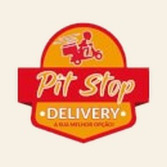
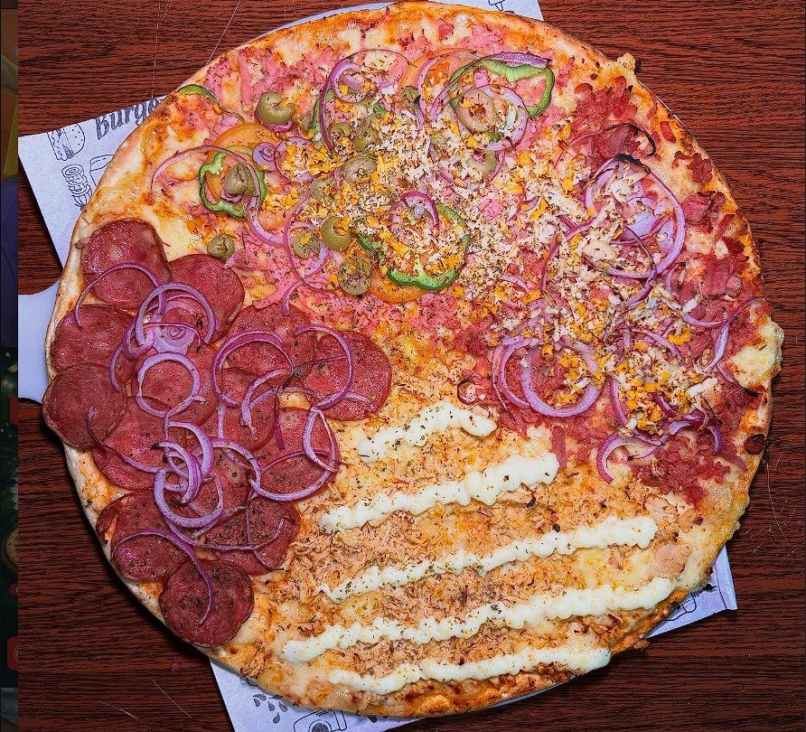
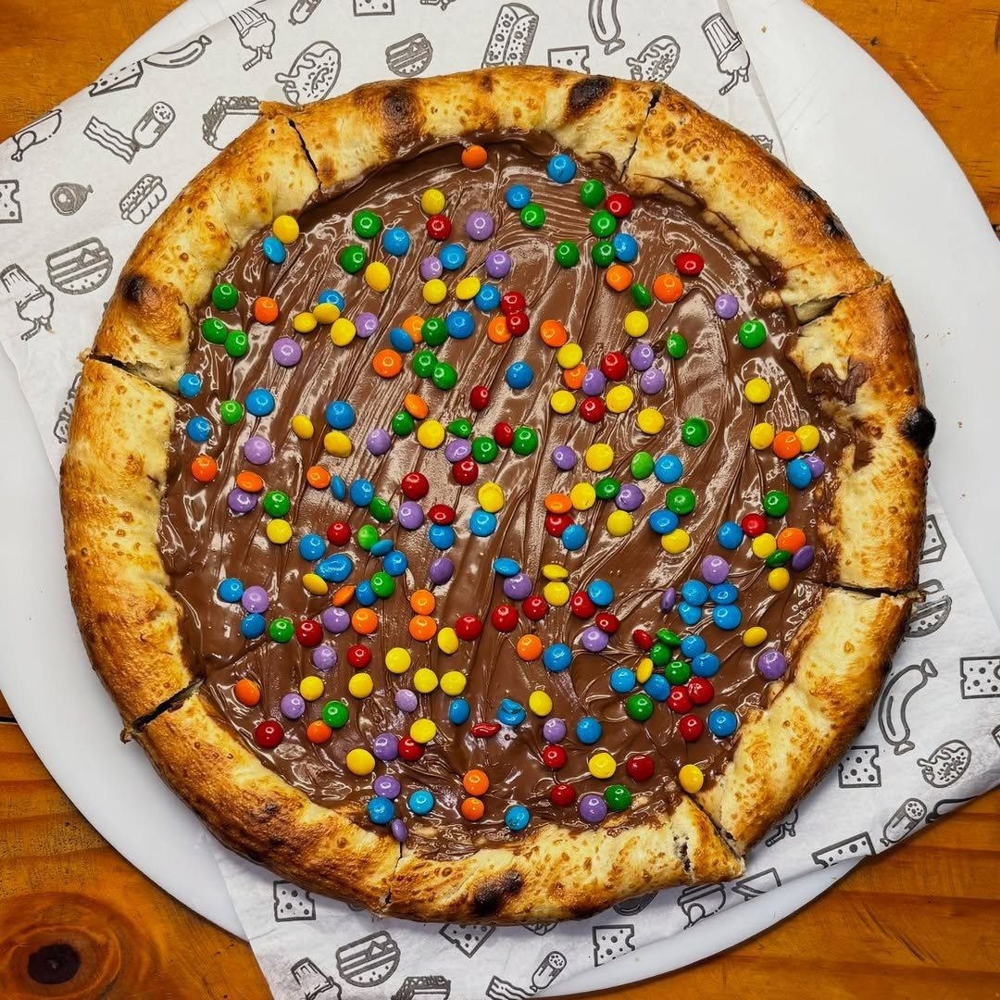

Início · Os sabores
Os 47 sabores da PitStop
27 tradicionais sem adicional, 16 premium e 4 doces, com os ingredientes como a casa publica.

PitStopPizzaria na Barra do Pote · Vera Cruz
Da casa
Pitstop, o sabor que leva o nome
Molho de tomate, mussarela, frango, presunto e orégano. Na família, a loja descreve com frango, presunto, azeitonas e cebola.

Com sotaque
Cangaceira, Maria Bonita, Sertaneja
- P1SertanejaMolho de tomate, mussarela, carne seca, banana da terra e requeijão+ R$ 12,00
- P2CangaceiraMolho de tomate, mussarela, carne seca desfiada, queijo coalho, melaço e orégano+ R$ 14,00
- P3Maria BonitaMolho de tomate, mussarela, carne seca desfiada, cream cheese, geleia de pimenta e orégano+ R$ 14,00
E entre as tradicionais, sem adicional: Queijo Coalho com Melaço, com molho de tomate, mussarela, queijo coalho e melaço.
Tradicionais
Sem adicional
- Mussarela · Molho de tomate, mussarela, azeitonas e orégano
- Milho · Molho de tomate, mussarela, milho e orégano
- Bacon · Molho de tomate, mussarela, bacon, azeitonas e orégano
- Bacon com Milho · Molho de tomate, mussarela, bacon, milho, azeitonas e orégano
- Bacon com Catupiry · Molho de tomate, mussarela, bacon, catupiry e orégano
- Bacon com Cheddar · Molho de tomate, mussarela, bacon, cheddar e orégano
- Calabresa · Molho de tomate, mussarela, calabresa e orégano
- Calabresa Acebolada · Molho de tomate, mussarela, calabresa, cebola e orégano
- Calabresa com Catupiry · Molho de tomate, mussarela, calabresa, catupiry e orégano
- Calabresa com Cheddar · Molho de tomate, mussarela, calabresa, cheddar e orégano
- Calabresa a Moda · Molho de tomate, mussarela, calabresa, cebola, pimentão e orégano
- Frango · Molho de tomate, mussarela, frango e orégano
- Frango com Catupiry · Molho de tomate, mussarela, frango, catupiry e orégano
- Frango com Cheddar · Molho de tomate, mussarela, frango, cheddar e orégano
- Frango com Milho · Molho de tomate, mussarela, frango, milho e orégano
- Frango com Bacon · Molho de tomate, mussarela, frango, bacon e orégano
- Bauru · Molho de tomate, mussarela, presunto, tomate e orégano
- Presunto · Molho de tomate, mussarela, presunto e orégano
- 3 Queijos · Molho de tomate, mussarela, catupiry, cheddar e orégano
- Marguerita · Molho de tomate, mussarela, tomate, manjericão e orégano
- Baiana · Molho de tomate, mussarela, calabresa moída, pimenta calabresa e orégano
- Americana · Molho de tomate, mussarela, calabresa, bacon, ovos, cebola e orégano
- Portuguesa · Molho de tomate, mussarela, presunto, ovos, azeitonas, cebola, tomate, pimentão e orégano
- Milho com Catupiry · Molho de tomate, mussarela, milho, catupiry e orégano
- Pitstop · Sabor da casa: molho de tomate, mussarela, frango, presunto e orégano
- Chic cheddar · Molho de tomate, mussarela, cheddar, batata palha e orégano
- Queijo Coalho com Melaço · Molho de tomate, mussarela, queijo coalho e melaço
Doces
Para fechar a noite
- Chocolate com MM · Chocolate ao leite e confeitos coloridos
- Prestígio · Chocolate ao leite e coco ralado
- Banana com Doce de Leite
- Romeu & Julieta · Molho, mussarela e goiabada

Dúvidas frequentes
Perguntas comuns
Posso misturar premium e tradicional?
Pode. A pizza soma o adicional do sabor premium.
O que é a Cangaceira?
Carne seca desfiada, queijo coalho e melaço sobre molho de tomate e mussarela.
E a Maria Bonita?
Carne seca desfiada, cream cheese e geleia de pimenta.
Bandeirada final
Fome bateu? A PitStop entrega pela ilha.
Monte a pizza, escolha o bairro ou a retirada e mande o pedido pronto para o WhatsApp da casa.